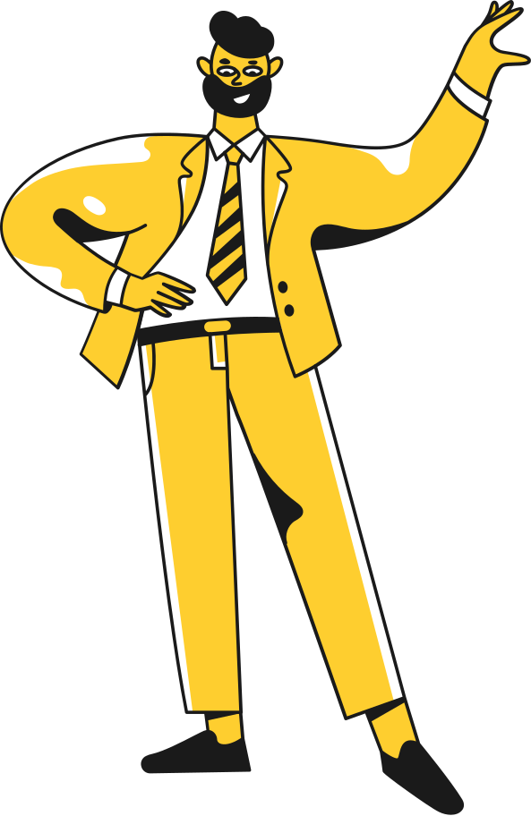

Le Anh Quan
 Information
Information
- Student number: s3877457
- Email: s3877457@rmit.edu.vn
 About Me
About Me
- Ninh Hoa, a little hamlet near Nha Trang, is where I was born. My parents were very accepting of me and let me choose my own route. They wanted me to be a doctor at first, but after learning about my programming passion, they decided to let me study for programming positions instead. I picked software engineering as my RMIT major because I believe it will allow me to further enhance my programming skills while also allowing me to practice my English. I'm an introvert, but I'm working on improving myself so that I can work better with my co-workers.
-
My ambition is to find a well-paying career so that I can assist support my aging parents. In my spare time, I enjoy playing video games, and one of my favorite things to do with them is to tamper with the code or the game's value in order to disrupt the game's balance; this is what first drew me to software engineering. When I was older and had more time to explore, I decided on IT as my major because it was just getting started in Vietnam. When I graduate, I believe IT will explode, and I believe I possess attributes that are appropriate for IT, such as attention, devotion, and a readiness to learn and adapt. Because to its worldwide presence, internal climate, outstanding facilities, and expertise in IT, I picked RMIT to study. It also helped that my sister was an RMIT graduate at the time, and she was able to get work owing to the RMIT job placement program. Despite the fact that she studied business, she was able to persuade my parents of the benefits RMIT will provide me in the future..
 Ideal jobs
Ideal jobs

- The link:
https://www.vietnamworks.com/fresher-java-1-1436391-jv/?source=searchResults&searchType=2&placement=1436392&sortBy=date
(Vietnam works,2021)
-
Participating in the Rookie Training program: Intensive training for 3 months on Java Web to prepare knowledge and perfect skills before participating in the project, with the following contents:
Personal profile
Some test show my personality
-
These exams provide me with information about my personality, strengths and limitations, and learning style preferences. After answering the questions, I saw that several of my attributes match those listed. While these tests may not be completely accurate, and the results may alter over time as I grow, they provide me with a great starting point for improving myself. These exams reveal that I am creative and perceptive, indicating that I am qualified to help the team create ideas. The exam also revealed that I am a highly introverted individual, indicating that I should not be the first pick if the organization need a spokesman and that I need to improve my presenting and communication abilities. When establishing a team, I should look for people who can compensate for my limitations in order to cover more ground, but I also shouldn't let my flaws prevent me from trying a new position or filling a gap in the team.